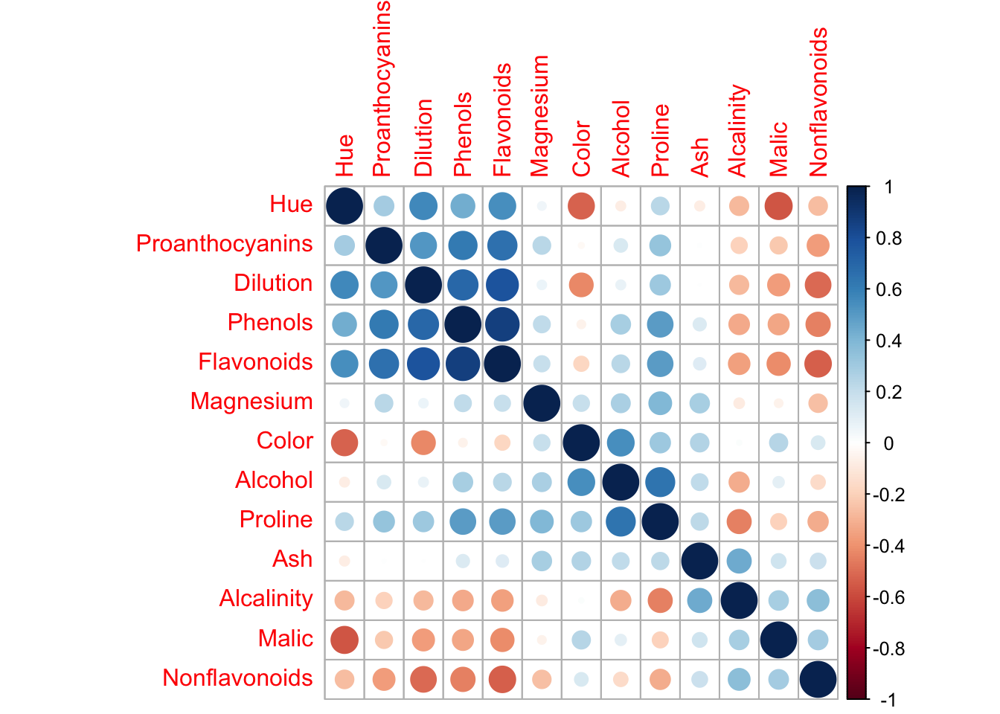

Exploratory Data Analysis
Donghyung Lee
2020-02-21
Last updated: 2020-02-21
Checks: 7 0
Knit directory: STA463_Spring_2020/
This reproducible R Markdown analysis was created with workflowr (version 1.4.0). The Checks tab describes the reproducibility checks that were applied when the results were created. The Past versions tab lists the development history.
Great! Since the R Markdown file has been committed to the Git repository, you know the exact version of the code that produced these results.
Great job! The global environment was empty. Objects defined in the global environment can affect the analysis in your R Markdown file in unknown ways. For reproduciblity it’s best to always run the code in an empty environment.
The command set.seed(20200213) was run prior to running the code in the R Markdown file. Setting a seed ensures that any results that rely on randomness, e.g. subsampling or permutations, are reproducible.
Great job! Recording the operating system, R version, and package versions is critical for reproducibility.
Nice! There were no cached chunks for this analysis, so you can be confident that you successfully produced the results during this run.
Great job! Using relative paths to the files within your workflowr project makes it easier to run your code on other machines.
Great! You are using Git for version control. Tracking code development and connecting the code version to the results is critical for reproducibility. The version displayed above was the version of the Git repository at the time these results were generated.
Note that you need to be careful to ensure that all relevant files for the analysis have been committed to Git prior to generating the results (you can use wflow_publish or wflow_git_commit). workflowr only checks the R Markdown file, but you know if there are other scripts or data files that it depends on. Below is the status of the Git repository when the results were generated:
Ignored files:
Ignored: .DS_Store
Ignored: .Rhistory
Ignored: .Rproj.user/
Untracked files:
Untracked: docs/figure/
Note that any generated files, e.g. HTML, png, CSS, etc., are not included in this status report because it is ok for generated content to have uncommitted changes.
These are the previous versions of the R Markdown and HTML files. If you’ve configured a remote Git repository (see ?wflow_git_remote), click on the hyperlinks in the table below to view them.
| File | Version | Author | Date | Message |
|---|---|---|---|---|
| Rmd | f4a19f7 | dleelab | 2020-02-21 | f |
| Rmd | 5f4517b | dleelab | 2020-02-21 | fix |
| Rmd | bc3af31 | dleelab | 2020-02-21 | fix |
| Rmd | b6b65aa | dleelab | 2020-02-21 | added |
| Rmd | 3d9f3f5 | dleelab | 2020-02-21 | created |
Install and load R packages
if(FALSE){
install.packages("pheatmap")
install.packages("ggplot2")
install.packages("corrplot")
install.packages("plyr")
install.packages("GGally")
}
library(ggplot2)
library(pheatmap)
library(corrplot)corrplot 0.84 loadedlibrary(plyr)
library(GGally)Registered S3 method overwritten by 'GGally':
method from
+.gg ggplot2Read wine data
wine.data <- read.table("https://archive.ics.uci.edu/ml/machine-learning-databases/wine/wine.data", sep=",")
colnames(wine.data) <- c("Type","Alcohol","Malic","Ash","Alcalinity","Magnesium","Phenols",
"Flavonoids","Nonflavonoids","Proanthocyanins","Color",
"Hue","Dilution","Proline")
head(wine.data) Type Alcohol Malic Ash Alcalinity Magnesium Phenols Flavonoids
1 1 14.23 1.71 2.43 15.6 127 2.80 3.06
2 1 13.20 1.78 2.14 11.2 100 2.65 2.76
3 1 13.16 2.36 2.67 18.6 101 2.80 3.24
4 1 14.37 1.95 2.50 16.8 113 3.85 3.49
5 1 13.24 2.59 2.87 21.0 118 2.80 2.69
6 1 14.20 1.76 2.45 15.2 112 3.27 3.39
Nonflavonoids Proanthocyanins Color Hue Dilution Proline
1 0.28 2.29 5.64 1.04 3.92 1065
2 0.26 1.28 4.38 1.05 3.40 1050
3 0.30 2.81 5.68 1.03 3.17 1185
4 0.24 2.18 7.80 0.86 3.45 1480
5 0.39 1.82 4.32 1.04 2.93 735
6 0.34 1.97 6.75 1.05 2.85 1450wine.data$Type <- factor(wine.data$Type)Summary
summary(wine.data) Type Alcohol Malic Ash Alcalinity
1:59 Min. :11.03 Min. :0.740 Min. :1.360 Min. :10.60
2:71 1st Qu.:12.36 1st Qu.:1.603 1st Qu.:2.210 1st Qu.:17.20
3:48 Median :13.05 Median :1.865 Median :2.360 Median :19.50
Mean :13.00 Mean :2.336 Mean :2.367 Mean :19.49
3rd Qu.:13.68 3rd Qu.:3.083 3rd Qu.:2.558 3rd Qu.:21.50
Max. :14.83 Max. :5.800 Max. :3.230 Max. :30.00
Magnesium Phenols Flavonoids Nonflavonoids
Min. : 70.00 Min. :0.980 Min. :0.340 Min. :0.1300
1st Qu.: 88.00 1st Qu.:1.742 1st Qu.:1.205 1st Qu.:0.2700
Median : 98.00 Median :2.355 Median :2.135 Median :0.3400
Mean : 99.74 Mean :2.295 Mean :2.029 Mean :0.3619
3rd Qu.:107.00 3rd Qu.:2.800 3rd Qu.:2.875 3rd Qu.:0.4375
Max. :162.00 Max. :3.880 Max. :5.080 Max. :0.6600
Proanthocyanins Color Hue Dilution
Min. :0.410 Min. : 1.280 Min. :0.4800 Min. :1.270
1st Qu.:1.250 1st Qu.: 3.220 1st Qu.:0.7825 1st Qu.:1.938
Median :1.555 Median : 4.690 Median :0.9650 Median :2.780
Mean :1.591 Mean : 5.058 Mean :0.9574 Mean :2.612
3rd Qu.:1.950 3rd Qu.: 6.200 3rd Qu.:1.1200 3rd Qu.:3.170
Max. :3.580 Max. :13.000 Max. :1.7100 Max. :4.000
Proline
Min. : 278.0
1st Qu.: 500.5
Median : 673.5
Mean : 746.9
3rd Qu.: 985.0
Max. :1680.0 A matrix of scatter plots
pairs(wine.data)pairs(wine.data[,c("Type","Alcohol","Proline","Color")])ggpairs(wine.data[,c("Type","Alcohol","Proline","Color")], aes(colour=Type, alpha=0.6), bins=10)Warning in warn_if_args_exist(list(...)): Extra arguments: 'bins' are
being ignored. If these are meant to be aesthetics, submit them using the
'mapping' variable within ggpairs with ggplot2::aes or ggplot2::aes_string.`stat_bin()` using `bins = 30`. Pick better value with `binwidth`.
`stat_bin()` using `bins = 30`. Pick better value with `binwidth`.
`stat_bin()` using `bins = 30`. Pick better value with `binwidth`.Violin plots
ggplot(wine.data, aes(x=Type, y=Alcohol, fill=Type)) +
geom_violin(trim=FALSE)+
geom_boxplot(width=0.1, fill="white")+
labs(title="Alcohol by wine type",x="Wine Type", y = "Alcohol") +
scale_fill_brewer(palette="RdBu") +
theme_minimal()Histograms
type.alcohol.mean <- ddply(wine.data, "Type", summarise, alcohol.mean=mean(Alcohol))
type.alcohol.mean Type alcohol.mean
1 1 13.74475
2 2 12.27873
3 3 13.15375ggplot(wine.data, aes(x=Alcohol, fill=Type, color=Type)) +
geom_histogram(position="identity", alpha=0.8, bins=20) +
geom_vline(data=type.alcohol.mean, aes(xintercept=alcohol.mean, color=Type),
linetype="dashed") +
scale_color_brewer(palette="Dark2") +
scale_fill_brewer(palette="Dark2") +
theme_minimal()Correlations
wine.cor <- cor(wine.data[,-1]) # Remove Type
corrplot(wine.cor, order="hclust")
pheatmap(wine.cor)Read white wine quality data
wine.qual <- read.table("https://archive.ics.uci.edu/ml/machine-learning-databases/wine-quality/winequality-white.csv", sep=";", header=T)
dim(wine.qual)[1] 4898 12wine.qual.all <- wine.qual
set.seed(1000)
rsam <- sample(1:nrow(wine.qual), 1000, replace=F)
wine.qual <- wine.qual[rsam,][,c(1,3,4,8,9,11,12)]
dim(wine.qual)[1] 1000 7head(wine.qual) fixed.acidity citric.acid residual.sugar density pH alcohol quality
580 6.0 0.26 6.0 0.99120 3.38 12.3 7
4310 6.6 0.25 4.8 0.99198 3.36 12.6 6
1075 6.2 0.45 12.0 0.99740 3.17 9.3 6
4440 7.2 0.16 5.9 0.99428 3.09 9.8 5
402 6.8 0.51 11.8 0.99760 3.19 8.8 5
358 6.1 0.33 1.1 0.99270 3.15 9.5 6table(wine.qual$quality)
3 4 5 6 7 8 9
4 34 301 460 171 29 1 A matrix of scatter plots
wine.qual$quality <- factor(wine.qual$quality)
ggpairs(wine.qual, aes(colour=quality, alpha=0.6), bins=10)Warning in warn_if_args_exist(list(...)): Extra arguments: 'bins' are
being ignored. If these are meant to be aesthetics, submit them using the
'mapping' variable within ggpairs with ggplot2::aes or ggplot2::aes_string.Warning: Groups with fewer than two data points have been dropped.
Warning: Groups with fewer than two data points have been dropped.
Warning: Groups with fewer than two data points have been dropped.
Warning: Groups with fewer than two data points have been dropped.
Warning: Groups with fewer than two data points have been dropped.
Warning: Groups with fewer than two data points have been dropped.`stat_bin()` using `bins = 30`. Pick better value with `binwidth`.
`stat_bin()` using `bins = 30`. Pick better value with `binwidth`.
`stat_bin()` using `bins = 30`. Pick better value with `binwidth`.
`stat_bin()` using `bins = 30`. Pick better value with `binwidth`.
`stat_bin()` using `bins = 30`. Pick better value with `binwidth`.
`stat_bin()` using `bins = 30`. Pick better value with `binwidth`.Violin plots (quality vs citric.acid)
wine.qual.all$quality <- factor(wine.qual.all$quality)
ggplot(wine.qual.all, aes(x=quality, y=citric.acid, fill=quality)) +
geom_violin(trim=FALSE)+
geom_boxplot(width=0.1, fill="white")+
labs(title="Citric Acid by Wine Quality",x="Quality", y = "Citric Acid") +
scale_fill_brewer(palette="RdBu") +
theme_minimal()Correlations
qual.cor <- cor(wine.qual.all[,-12])
corrplot(qual.cor)pheatmap(qual.cor)
Residual Sugar vs Density
wine.qual.all$quality <- factor(wine.qual.all$quality)
ggplot(wine.qual.all, aes(x=residual.sugar, y=density, color=quality)) +
geom_point() +
labs(title="residual sugar vs density",x="Residual Sugar", y = "Density") +
scale_color_brewer(palette="Dark2") +
theme_minimal()ggplot(wine.qual, aes(x=residual.sugar, y=density, color=quality)) +
geom_point() +
labs(title="residual sugar vs density",x="Residual Sugar", y = "Density") +
scale_color_brewer(palette="Dark2") +
theme_minimal()ggplot(wine.qual, aes(x=residual.sugar, y=density, color=quality)) +
geom_point() +
labs(title="residual sugar vs density",x="Residual Sugar", y = "Density") +
scale_color_brewer(palette="Dark2") +
facet_grid(rows=vars(quality)) +
theme_minimal()pH vs Fixed acidity
ggplot(wine.qual, aes(x=pH, y=fixed.acidity, color=quality)) +
geom_point() +
labs(title="pH vs fixed acidity",x="pH", y = "fixed acidity") +
scale_color_brewer(palette="Dark2") +
theme_minimal()add fitted lines (pH vs Fixed acidity)
ggplot(wine.qual, aes(x=pH, y=fixed.acidity, color = quality) ) +
geom_point() +
geom_smooth(method = "lm", se = FALSE) +
labs(title="pH vs fixed acidity",x="pH", y = "fixed acidity") +
scale_color_brewer(palette="Dark2") +
theme_minimal()
sessionInfo()R version 3.6.1 (2019-07-05)
Platform: x86_64-apple-darwin15.6.0 (64-bit)
Running under: macOS Mojave 10.14.6
Matrix products: default
BLAS: /Library/Frameworks/R.framework/Versions/3.6/Resources/lib/libRblas.0.dylib
LAPACK: /Library/Frameworks/R.framework/Versions/3.6/Resources/lib/libRlapack.dylib
locale:
[1] en_US.UTF-8/en_US.UTF-8/en_US.UTF-8/C/en_US.UTF-8/en_US.UTF-8
attached base packages:
[1] stats graphics grDevices utils datasets methods base
other attached packages:
[1] GGally_1.4.0 plyr_1.8.4 corrplot_0.84 pheatmap_1.0.12
[5] ggplot2_3.2.1
loaded via a namespace (and not attached):
[1] Rcpp_1.0.2 compiler_3.6.1 pillar_1.4.2
[4] RColorBrewer_1.1-2 git2r_0.26.1 workflowr_1.4.0
[7] tools_3.6.1 digest_0.6.20 evaluate_0.14
[10] tibble_2.1.3 gtable_0.3.0 pkgconfig_2.0.2
[13] rlang_0.4.0 yaml_2.2.0 xfun_0.9
[16] withr_2.1.2 stringr_1.4.0 dplyr_0.8.3
[19] knitr_1.24 fs_1.3.1 rprojroot_1.3-2
[22] grid_3.6.1 tidyselect_0.2.5 reshape_0.8.8
[25] glue_1.3.1 R6_2.4.0 rmarkdown_1.15
[28] reshape2_1.4.3 purrr_0.3.2 magrittr_1.5
[31] whisker_0.3-2 backports_1.1.4 scales_1.0.0
[34] htmltools_0.3.6 assertthat_0.2.1 colorspace_1.4-1
[37] labeling_0.3 stringi_1.4.3 lazyeval_0.2.2
[40] munsell_0.5.0 crayon_1.3.4